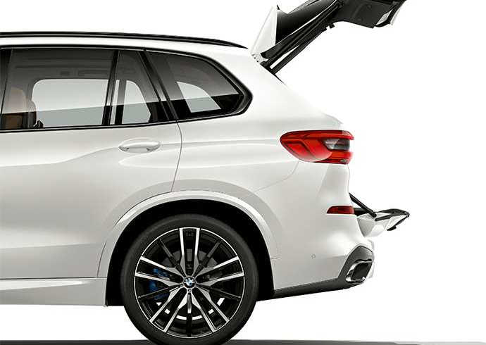
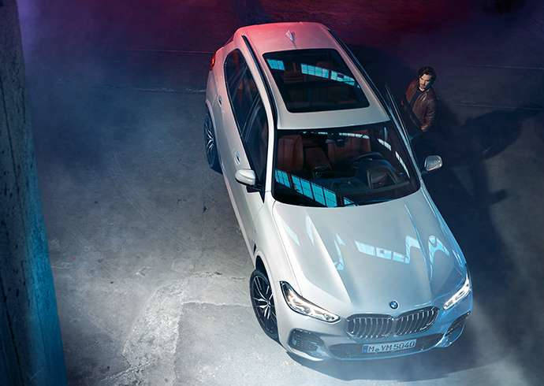

Detalhes

PERFECT MANAGEMENT
O compartimento de bagagem do BMW X5 oferece uma nova geração de conforto. Para carregar e descarregar de forma conveniente, as seções inferior e superior da porta traseira é dividida e podem ser abertas e fechadas de forma totalmente elétrica. Em combinação com o Comfort Access, basta um breve movimento direcionado do pé abaixo da traseira. Quando a porta do bagageiro é aberta, a tampa do compartimento de carga retrai-se ao toque de um botão.
O compartimento de bagagem do BMW X5 oferece uma nova geração de conforto. Para carregar e descarregar de forma conveniente, as seções inferior e superior da porta traseira é dividida e podem ser abertas e fechadas de forma totalmente elétrica. Em combinação com o Comfort Access, basta um breve movimento direcionado do pé abaixo da traseira. Quando a porta do bagageiro é aberta, a tampa do compartimento de carga retrai-se ao toque de um botão.

O DESIGN EXTERIOR E INTERIOR DO NOVO BMW X5
BMW X5 típico - cada detalhe uma declaração. A frente com a grande grade única ligeiramente hexagonal, os faróis distintos e as entradas de ar grandes, rodas de liga leve aro revelam o que se pode esperar: determinação em todos os sentidos. Graças ao teto de vidro panorâmico Sky Lounge, o interior mostra-se do seu melhor lado. Recursos de vidro preciosos definem detalhes exclusivos e a luz ambiente cria uma atmosfera especial. Oferecendo uma qualidade de áudio perfeita enquanto você está em movimento, o sistema de som surround Harman Kardon.
BMW X5 típico - cada detalhe uma declaração. A frente com a grande grade única ligeiramente hexagonal, os faróis distintos e as entradas de ar grandes, rodas de liga leve aro revelam o que se pode esperar: determinação em todos os sentidos. Graças ao teto de vidro panorâmico Sky Lounge, o interior mostra-se do seu melhor lado. Recursos de vidro preciosos definem detalhes exclusivos e a luz ambiente cria uma atmosfera especial. Oferecendo uma qualidade de áudio perfeita enquanto você está em movimento, o sistema de som surround Harman Kardon.
SEMPRE DOIS PASSOS À FRENTE
Serviços digitais e sistemas de assistência ao condutor do BMW X5. Perfeitamente conectado, sempre à frente. O BMW X5 tem a última geração de tecnologias de conectividade BMW. Os serviços digitais inteligentes e os sistemas de assistência ao motorista criam uma conexão perfeita com o mundo exterior e oferecem o máximo conforto e a maior segurança possível graças à operação intuitiva.
Serviços digitais e sistemas de assistência ao condutor do BMW X5. Perfeitamente conectado, sempre à frente. O BMW X5 tem a última geração de tecnologias de conectividade BMW. Os serviços digitais inteligentes e os sistemas de assistência ao motorista criam uma conexão perfeita com o mundo exterior e oferecem o máximo conforto e a maior segurança possível graças à operação intuitiva.